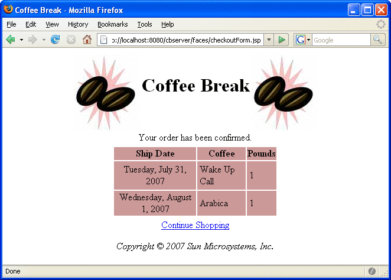

Building, Packaging, Deploying, and Running the Coffee Break Application
The source code for the Coffee Break application is located in the directory tut-install/javaeetutorial5/examples/coffeebreak/. Within the cb directory are subdirectories for each web application (cb, cb-saaj, and cb-jaxws) and a directory, cb-common, for classes shared by the web applications. Each subdirectory contains a build.xml file. The web application subdirectories in turn contain a src subdirectory for Java classes and configuration files, and a web subdirectory for web resources.
Setting the Port
The JAX-WS and SAAJ services in the Coffee Break application run at the port that you specified when you installed the Application Server. The tutorial examples assume that the Application Server runs on the default port, 8080. If you have changed the port, you must update the port number in the following file before building and running the examples:
tut-install/javaeetutorial5/examples/coffeebreak/cb-common/src/com/sun/cb/common/ CoffeeBreak.properties
Update the port in the following URLs:
endpoint.url=http://localhost:8080/jaxws-coffee-supplier/jaxws
saaj.url=http://localhost:8080/saaj-coffee-supplier
Building, Packaging, and Deploying the JAX-WS Coffee Supplier Service
To build the JAX-WS service and client library and to package and deploy the JAX-WS service using NetBeans IDE, follow these steps:
In NetBeans IDE, choose Open Project from the File menu.
In the Open Project dialog, navigate to tut-install/javaeetutorial5/examples/coffeebreak/.
Select the cb-jaxws folder.
Select the Open as Main Project and Open Required Projects check boxes.
Click Open Project.
Right-click the cb-jaxws project and choose Build.
Right-click the cb-jaxws project and choose Undeploy and Deploy.
To build the JAX-WS service and client library and to package and deploy the JAX-WS service using Ant, follow these steps:
In a terminal window, go to tut-install/javaeetutorial5/examples/coffeebreak/cb-jaxws/.
Run ant. This task calls the default target, which compiles the source files of the JAX-WS service.
Make sure the Application Server is running.
Deploy the JAX-WS service:
ant deploy
Building, Packaging, and Deploying the SAAJ Coffee Supplier Service
To build the SAAJ service and client library and to package and deploy the SAAJ service using NetBeans IDE, follow these steps:
In NetBeans IDE, choose Open Project from the File menu.
In the Open Project dialog, navigate to tut-install/javaeetutorial5/examples/coffeebreak/.
Select the cb-saaj folder.
Select the Open as Main Project and Open Required Projects check boxes.
Click Open Project.
Right-click the cb-saaj project and choose Build.
Right-click the cb-saaj project and choose Undeploy and Deploy.
To build the SAAJ service and client library and to package and deploy the SAAJ service using Ant, follow these steps:
In a terminal window, go to tut-install/javaeetutorial5/examples/coffeebreak/cb-saaj/.
Run ant. This task calls the default target, which creates the client library and compiles the SAAJ service classes.
Make sure the Application Server is started.
Deploy the SAAJ service:
ant deploy
Building, Packaging, and Deploying the Coffee Break Server
To build, package, and deploy the Coffee Break server using NetBeans IDE, follow these steps:
In NetBeans IDE, choose Open Project from the File menu.
In the Open Project dialog, navigate to tut-install/javaeetutorial5/examples/coffeebreak/.
Select the cb folder.
Select the Open as Main Project and Open Required Projects check boxes.
Click Open Project.
Right-click the cb project and choose Build.
Right-click the cb project and choose Undeploy and Deploy.
To build, package, and deploy the Coffee Break server using Ant, follow these steps:
In a terminal window, go to tut-install/javaeetutorial5/examples/coffeebreak/cb/.
Run ant. This task calls the default target, which compiles the server classes.
Make sure the Application Server is started.
Deploy the Coffee Break server:
ant deploy
Running the Coffee Break Client
After you have installed all the web applications, check that all the applications are running in the Admin Console. You should see cb, cb-saaj, and cb-jaxws in the list of applications.
You can run the Coffee Break client by opening this URL in a web browser:
http://localhost:8080/cbserver/
A page appears with the following message:
Redirecting to CoffeeBreak demo...click here otherwise.
In a few seconds, you should see a page like the one shown in Figure 36-2.
Figure 36-2 Order Form

After you have gone through the application screens, you will get an order confirmation that looks like the one shown in Figure 36-3.
Figure 36-3 Order Confirmation
Removing the Coffee Break Application
To remove the Coffee Break application, perform the following steps:
Undeploy the JAX-WS service, SAAJ service, and the Coffee Break server using the Admin Console or by running ant undeploy in their respective directories.
Stop the Application Server.
If you want to remove the build and dist directories, run ant clean in each directory, including tut-install/javaeetutorial5/examples/coffeebreak/cb-common/.